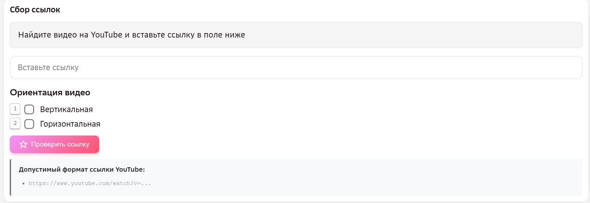
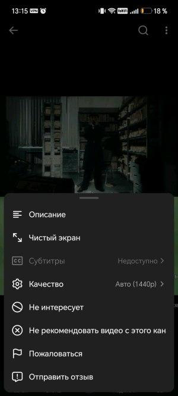

ИНТЕРФЕЙС
Формат рабочего задания
Открывая рабочее задание, вы видите одно поле для ссылки, два чекбокса ориентации и кнопку проверки.
Каждое задание — это одна ссылка на одно видео, а не комплект из нескольких ссылок.

| Поле | Что вносим |
|---|---|
| Ссылка | Ссылка на видеоколлаж, подходящий по критериям ниже. Принимается только полный адрес видеоисточника с «www.» и путём /shorts/… или /watch?… — «www.» обязательно, короткие ссылки или ссылки без «www.» не принимаются. Обязательно HD (1280×720) — для любой ориентации коллажа, проверяется через значение «Качество» в приложении видеоисточника. Заказчик отдельно уточняет: перед отправкой проверяйте не только разрешение по цифрам, но и общее качество картинки — смазанное/пиксельное видео не подходит, даже если формально указано HD. |
| Ориентация видео | Чекбокс «Вертикальная» или «Горизонтальная» — по ориентации коллажа. Один из двух обязателен: без отмеченного чекбокса задание не отправится. Заказчик уточнил: выставленная ориентация учитывается при оценке задания — примеры обеих ориентаций ниже. |
| «Проверить ссылку» | Проверяет точное совпадение — не была ли уже добавлена именно эта ссылка. Если да — задание не отправится, нужно подставить другую ссылку. «То же самое движение» на другом видео кнопка не ловит — см. «Повторы движения». |
Комментарий валидатора: низкое качество. Проверяйте картинку целиком, а не только цифры разрешения.
Замечание заказчика: у видео на этой заявке не должно быть такого плохого качества.
На шортсах разрешение не всегда видно сразу. Откройте меню (три точки сверху справа) → «Качество» — там указано фактическое разрешение видео.

КРИТЕРИИ
Критерии отбора видео
Критерии одинаковы для рабочих заданий и экзамена. Общая логика таблиц: слева — что подходит, справа — что не подходит.
Длительность видео и движения
| Параметр | Подходит | Не подходит |
|---|---|---|
| Длительность видео | ✅ Не длиннее 30 минут. В экзаменационной инструкции нижняя граница явно указана — 5 секунд; в рабочей отдельно не прописана, но следует из требования к самому движению (минимум 5 секунд, см. ниже), которое видео обязано содержать. | ❌ Длиннее 30 минут. |
| Длительность движения | ✅ От 5 до 60 секунд. | ❌ Короче 5 секунд или длиннее 60 секунд. |
| Склейки в момент движения | ✅ На всём протяжении движения (какой бы ни была его длительность — от 5 до 60 секунд) — без склеек и переходов. | ❌ Внутри движения, независимо от его длительности, есть склейка или переход. |
| Завершённость движения | ✅ Движение завершено (не обрывается), выполняется по одной и той же траектории в обеих частях коллажа и максимально идентично. Проверяется в рабочих заданиях. На экзамене акцент только на идентичности траектории (см. «Движение камеры» ниже) — завершённость отдельно не оценивается. | ❌ Движение обрывается на середине или траектория в двух частях коллажа заметно различается. |
Человек в кадре
| Параметр | Подходит | Не подходит |
|---|---|---|
| Кто выполняет движение | ✅ Человек или антропоморфное существо (например, робот) — прямоходящее, с глазами и конечностями как у человека. | ❌ Движение выполняет неживое (не человек и не человекоподобное существо), при этом движения не плавные, а урывками. Пример от заказчика — ниже. |
| Активность движения | ✅ Активное движение — именно такие движения нужно собирать. | ❌ Неактивное движение: человек стоит или сидит и просто покачивается, переминается; простая ходьба тоже не подходит. Из инструкции: поворот головы, один взмах рукой, кивание головой — тоже не считаются активными движениями. Примеры от заказчика — ниже. |
| Различимость людей | ✅ Человек, выполняющий движение, хорошо различим. | ❌ Человек виден издалека, в том числе один человек в толпе, снятый издалека (например, съёмка матча с трибун). |
| Несколько человек в кадре | ✅ Движение выполняет не один человек, а несколько; допустимо, если один выполняет движение, а остальные — на фоне. | — |
| Текст / предметы / выход за кадр | ✅ Небольшое перекрытие текстом или предметом; частичный выход человека за пределы кадра во время движения. Человек должен быть виден полностью. | ❌ Перекрытие или выход за кадр мешают увидеть человека полностью. |
| Рамки | ✅ Допустимы без ограничений — декоративная рамка по краю кадра сбору не мешает. | — |
| Вотермарки | ✅ Допустимы, если не перекрывают человека, выполняющего движение. | ❌ Вотермарка перекрывает человека или его движение. |
Движение выполняет неживое, и движения не плавные, а урывками. Такое видео к сбору не подлежит (см. «Кто выполняет движение» выше).
Комментарий валидатора: на видео люди либо видны не полностью (даже не по пояс), либо в кадре много людей, выполняющих разные движения. Если в кадре несколько человек на одном плане — они должны двигаться одинаково.
Комментарий валидатора: человек слишком маленький.
Замечание заказчика: обрезается голова — такое тоже не стоит прикладывать.
Человек просто стоит, переминается и слегка покачивается — движение неактивное, такое видео не подходит (см. «Активность движения» выше).
Замечание заказчика: видео, где человек просто идёт, брать не стоит.
Из инструкции: примеры, где движения не считаются активными — на них почти не совершается движений (например, лёгкий поворот головы или кивок). Такое не собираем.
Коллаж: границы и масштаб
| Параметр | Подходит | Не подходит |
|---|---|---|
| Граница между частями | ✅ Граница тонкая и проходит ровно посередине — обе половинки равны друг другу. Линия может быть и горизонтальной, и вертикальной — зависит от ориентации самого коллажа, оба варианта нормальны. | ❌ Граница толстая либо проходит не посередине (половинки не равны). |
| Масштаб частей | ✅ Масштаб человека одинаков в обеих частях коллажа. Ориентир заказчика: если в одной части человек виден в полный рост, во второй части он должен быть не меньше половины своего размера там же. | ❌ Масштаб частей разный — человек в одной части заметно мельче (например, вдвое меньше своего размера в другой части, как в корнер-кейсах ниже). |
| Отсутствие зелёного/синего экрана | ✅ Допустимо — если в кадре «до» эффекта зелёного/синего фона не видно, это не мешает сбору. | — |
| Состав кадра | ✅ Видео состоит только из двух частей коллажа (до и после эффекта), движение — только внутри них. | ❌ Движение происходит не только на частях коллажа, но и за его пределами — недопустимо. Видео должно состоять только из двух частей коллажа. Пример от заказчика — ниже. |
| Реальная съёмка хотя бы в одной части | ✅ Одна из частей — видео с реальным зелёным/синим экраном, без спецэффектов (совпадает с определением «до» эффекта). | ❌ Обе части нарисованы/сгенерированы — недопустимо, нужна хотя бы одна часть без эффектов. Пример от заказчика — ниже. |
Между частями коллажа — заметная толстая граница. Такое видео к сбору не подлежит.
Масштаб частей коллажа не совпадает. Такое видео к сбору не подлежит.
Замечание заказчика: части коллажа не равны — такое нельзя.
Замечание заказчика: части коллажа не равны — такое нельзя.
Комментарий валидатора: частей коллажа должно быть две, а здесь остальные части кадра просто размыты.
Замечание заказчика: движение происходит не только на частях коллажа, но и за его пределами — такое недопустимо. Видео должно состоять только из двух частей коллажа (до и после эффекта).
Замечание заказчика: примеры, где на одной из частей коллажа люди находятся слишком далеко — не берём. Люди здесь примерно вдвое меньше своего размера во второй части.
Замечание заказчика: примеры, где на одной из частей коллажа люди находятся слишком далеко — не берём.
Вопрос ассессоров: является ли такая граница коллажа приемлемой? Ответ заказчика: да, приемлемая, но не шире.
Замечание заказчика: оба коллажа нарисованы — необходимо, чтобы на одной части коллажа было видео с реальным зелёным экраном, без спецэффектов.
Съёмка и обработка
| Параметр | Подходит | Не подходит |
|---|---|---|
| Скорость | ✅ Естественная скорость движения. | ❌ Искусственные замедления и ускорения — недопустимы. |
| Движение камеры (зум, вращение) | ✅ Допустимо на частях коллажа (приближение, отдаление, вращение), если траектория самого движения на обеих частях идентична. Действует одинаково в рабочих заданиях и на экзамене. | — |
| Повторы движения | ✅ Движение впервые собирается в проекте — за этим следит сам исполнитель. | ❌ Такое же движение во всём проекте не должно повторяться. Общего списка уже собранных движений нет — кнопка «Проверить ссылку» ловит только повтор точно такой же ссылки, а не похожего движения на другом видео. |
| Происхождение видео | ✅ Видео с реальными компьютерными эффектами (CGI) — то, что и собираем: примеры 1–4 ниже. | ❌ Видео полностью сгенерировано нейросетью — например, по текстовому запросу. Пример от заказчика — ниже. |
| Технический артефакт (распад на полосы) | ✅ Объекты и человек в кадре видны чётко, без искажений. | ❌ Объекты в кадре распадаются на полосы — недопустимо. Действует одинаково в рабочих заданиях и на экзамене. |
Такое видео недопустимо: оно целиком сгенерировано нейросетью, хотя по жанру мимикрирует под настоящее «CGI до/после». Отличайте его от примеров 1–4 ниже — там реальные киноспецэффекты, и это именно то, что нужно собирать.
Замечания заказчика к этому ролику: сегмент с движением должен длиться минимум 5 секунд (здесь — 3 секунды, см. «Длительность движения» выше); не берём видео, созданные с помощью ИИ.
ПРИМЕРЫ
Разбор примеров из инструкций
Семь примеров из официальных инструкций заказчика — с видео и вердиктом.
Видео длится менее 30 минут, идентичное движение — в пределах 5 секунд, не перекрывается предметами или наложениями, половинки коллажа равны.
Видео длится менее 30 минут, движение — в пределах 5 секунд, наложения не мешают, половинки равны, граница между частями тонкая. Зелёный/синий экран на кадре «до» не виден — это не проблема, эффект CGI всё равно показан коллажем.
Видео длится менее 30 минут, движение — в пределах 5 секунд, наложения не мешают, половинки равны. Для сбора подходят и вертикальные коллажи.
Видео длится менее 30 минут, движение — в пределах 5 секунд, наложения не мешают, половинки равны. На верхней части коллажа есть движение камеры, а на нижней нет — это различие сбору не мешает.
Видео длится менее 30 минут, но само движение длится менее 5 секунд (с 3:07 по 3:11), между частями коллажа — толстая граница, на правом кадре есть склейка.
Видео слева после применения эффекта считается наложением; также не подходит по разрешению — оно слишком мало по отношению к масштабу видео «до» эффекта.
Половинки коллажа не равны друг другу: на верхней половинке видна только часть человека, а масштаб в целом слишком маленький.
ПЕРЕД ОТПРАВКОЙ
Проверьте себя
- Ссылка ведёт на видео в разрешении HD (1280×720) и не длиннее 30 минут — и картинка в целом хорошего качества, не смазанная.
- Отмечен чекбокс ориентации — вертикальная или горизонтальная.
- Нажата кнопка «Проверить ссылку», чтобы исключить дубли.
- Движение выполняет человек или человекоподобное существо (прямоходящее, с глазами и конечностями как у человека), а не неживое.
- Движение активное — человек не просто стоит, сидит, покачивается или идёт.
- Движение целиком, без склеек — завершено и идентично в обеих частях коллажа.
- Граница между частями тонкая и по центру, масштаб частей совпадает.
- Видео состоит только из двух частей коллажа, движение не выходит за их пределы.
- Хотя бы одна часть — реальная съёмка, без эффектов.
- Такое движение ещё не собиралось в проекте.